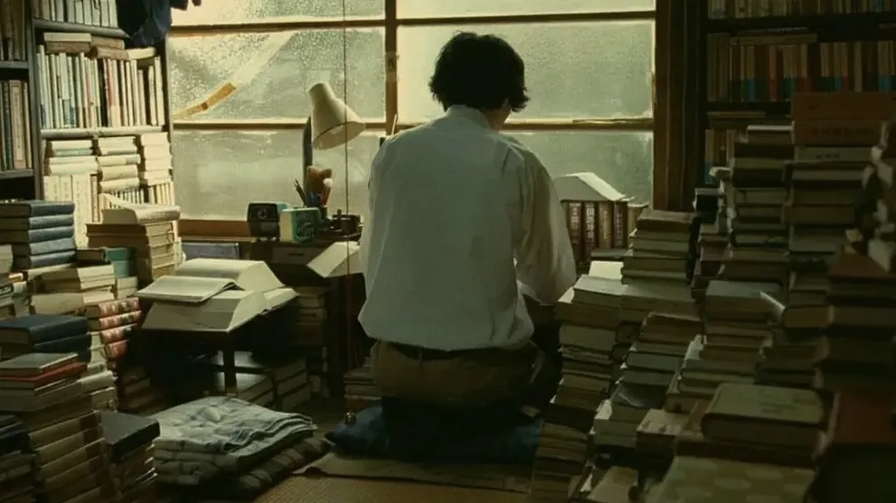
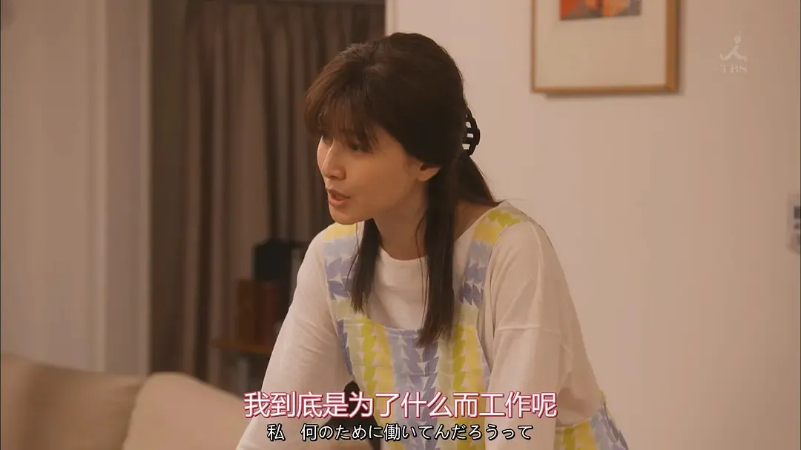

转眼，加入B大厂一周年了。刚加入的时候，有人道喜——毕竟在增长不易的当下，可以算是加入了“中国最好的互联网公司”。有人担忧——要兼顾工作与学业，实在需要保重身体。
我们很容易忽视了身体的过劳，《百岁人生》中认为人拥有两类资产，一类是有形资产，比如金钱、房产等，另一类是无形资产，包含了你的身体与精神健康、再教育等。身体能量是你同样需要管理的资产，它像你的金钱一样重要。
在忙着挣钱的时候，加班、久坐、无形的精神紧张，都是我们的常态。来到大厂后更觉如此。因此从2024年春节开始我时常去健身，出出汗、动起来，让自己从久坐伏案与回家躺倒的状态中切换出来，收获身体的能量。还有一个潜在的作用是，这让我减少了不自觉的加班，让我感觉自己的生活能够有一点平衡，不再是被工作掏空的状态。
然而，伴随最近的工作遇到一些转变，高频的交流与碰撞，连续一两周都日均11点下班。身心俱疲后，我决定用新的思路去达成目标，用更广阔的视角看，新路径也不算偏航。这期间的思索，顺便又加深了另一个问题的解答，那就是“我为什么在这里？”
01 我为什么在这里
这一年里，从社交媒体上看，大厂叙事基本以逃离为主论调，非大厂叙事很受关注与欢迎。在非大厂叙事里，自由与掌控力是核心主题，这种情况，几乎与《一人公司》这本对20年前美国科技泡沫破灭与裁员潮的人类学观察如出一辙。但是在还未能逃离或不能逃离大厂的人中，感受又是另外一种，人们需要思考自己会不会被裁员，能不能维持长期的高收入。
我个人感觉，目前还在大厂的人可能有这样几种情况：
- **矮子里面拔高个，没有更好的去处。**不离开，最底层的因素不过就是，需要在这里挣钱，并且没有更好的挣钱的地方。钱难挣屎难吃，那就硬着脸皮吃，别去咀嚼了。
- **相信技术或产品价值，认为这里有实现价值的机会。**这种时候，忙碌可能就会被重新定义为“拼”——无休止的工作不再是需要忍受的负担，反而成了令人振奋的生活选择，甚至值得在社交媒体上炫耀一番。然而事实上，这也会带来另一个极端：我们在逼着自己，将不断增加的工作量强塞进固定的、无法延长的一天之中。
- **将价值感寄托在其他地方，或同时探索副业中。**这是另一种精神的出路，可以或短或长地安置自己的思绪。有一个寄托的地方或自己热爱的东西，也是一个令人羡慕的方式。

**而我属于哪种情况呢？很显然，正试图从第一种往第三种切换。**认识到这一点，都是因为这一年里，我对自己的认知更加全面：
- **在职业上，有一些“有毒”的牛马特征。**例如：精进的习惯、专注的状态、多余的责任心。但其实不是所有事情都要做得那么细致，事无巨细只会让人很累，浪费很多心力，也看不到回馈。容易进入专注状态，会让我时常在午休的时候也不自觉进入电脑，身体总是久坐僵硬状态。多余的责任心，让人觉得所有事情都有做得更好的空间，但是其实不是所有事情都需要做，资源是有限的，要放在最高优先级的事情上。
- **在生活中，还不够懂得如何休息与放松。**过去，如果周末睡了懒觉，我会怪自己。如果看了一晚上短视频，我会怪自己。如果没忍住买了东西，我会怪自己。有太多时候，我都在责怪自己。这一年，我练习心安理得地休息，练习接受短视频刺激的多巴胺，练习不去思考休闲的意义和价值。这一年，我的内心多了一个安抚自己的手，时不时轻轻拍下那个紧绷不安的小孩，告诉她：“你可以玩耍，这没什么大不了。”
- **在信念上，摸清楚了最深的热爱是创作。**其实几年前，我就有这种感觉，但是始终觉得做内容大概只能作为心中镜花水月一般的事情，没有信心靠这个养活自己，也没有搞清楚自己能写好什么，能对什么内容保持长久的热忱。但是最近的这一年里，我想了很多很多次，我好像最喜欢的还是写东西，并且现在基本可以描绘出自己的创作母题是什么了。
02 创造一些不会清零的东西
在刚加入B大厂的时候，我在记录簿里面写下了三个问题，准备让自己多做做“大厂日常三省”：
- 一问：现在做的事情，如果自己离开了，还能被延续或留下吗？
- 二问：现在做的事情，如果离开了大厂，还有可行性吗？
- 三问：现在做的事情，值得写在简历里吗？
嚯，危机感可真够重啊，时刻在反思，时刻有忧虑。经过最近的2次跳槽，我总结出来自己适应新公司的阶段特征：
- 前三个月，格外拼，面对新的组织架构和平台信息，想要尽快掌握一切，兼顾所有事情，不露怯；——这会让自己很累，并且也不利于团队负责人和协作方长期的预期管理。
- 半年左右，在主要工作上基本都可以收获正向反馈，也大概能确定自己可以在这里干多久；——这时候需要关注优先级更高的事情，否则会一直超出身体负荷工作。
- 一年左右，逐步进入舒适区，完成各项任务都不会太困难，认真踏实去做，总能完成；——这时候要做的其实是平衡，因为一不小心还是会牺牲生活时间。
现在看来，我还是有“自我剥削”的情况，很容易复盘反思，很容易去“卷”。
卷，会成为一种惯性，除非身体发出警报，否则面对高度竞争和业务压力，我们常常会加班到很晚，有时候自己对结果或质量的高要求也会让自己不想应付了事。还有些时候，仅仅是因为回家了也不知道干什么而待在公司干活。
无论是哪一种，都意味着作为一个现代企业里的打工人，尤其是互联网大厂里面的打工人，正过着传送带一般的人生：当你处理完一项任务，达成了一个目标，你并不会变得空闲。你只会更快地开启下一个工作。当你的目标完成得越好，下一个目标只会定得更高。这是资本主义制度的要求，是一种默认的选择。所以，我们往往无法得到理想的休息。
在与ST交流这里卷不卷的时候，有句话让我印象深刻——“大家好像都觉得自己的时间不值钱”。是啊，瞎卷啥呢！
把自己的时间过度投入到了工作里。其实大多数时候忙碌也意味着：我们很多时候并不享受生活——我们在逃避自我，逃避自由。
之前，林壮壮在离开腾讯的总结文章里提到：“我在公司内所追求的东西优先级是：死后都不会清零的东西>死了就会清零的东西>离开一家公司就会清零的东西。抱着这种心态去工作，还挺有意思。”
我觉得这跟我之前给自己写的大厂日常三省有点像，但更彻底。
我曾思考，有什么是我最想做的事情？有什么是我死后都不会清零的东西？正如6年前我不想扮演一个日复一日的银行职员，如今我也不想扮演一个被新自由主义洗脑的互联网大厂女工，我想要做自己最想做的事情，体验这种精彩，看看自己到底会走到哪里。
眼下，对我而言——写作是一种方式，把每一篇文章都当作是一个礼物，送给自己也送给读者。这会让我感受到自己的能量。
因此，我在小报童开通了一个专栏，分享自己关于产品营销的思考与记录。有一部分内容曾分享在我的公众号里，但在小报童，我还将更新那些自己知识库里未曾对外分享过的内容，**打造一份独家的《产品营销强壮手册》，为自己做个阶段性总结。**因此，读者可以在这个手册中，收获我过去5年的产品营销经验总结与独家思考。
03 承认自己的有限性
其实两年前，我就想做关于产品营销的课程或者知识星球了，但是一直没能启动，我怕自己做不好，觉得自己输出的质量可能不够高，可能没什么价值。于是就这样拖延过了两年。
时至今日，我发现自己其实从来没停止过记录思考，即使我的职业发展方向已经不仅仅是产品营销。如今即使更新的频率很低，时不时的还是有一些同行读者通过知乎或公众号找到我交流，这让我意识到：其实我已经做了一些有意义的事，只是我一直在下意识贬低它们，认为它们不够“好”，不够“重要”。
思考与写作的习惯，就足够成为一种驱动力了，那为什么不试试看呢？
反正本来也不图暴富，反正本来自己都要输出，那么为什么不做个栏目呢？承认自己的有限性，不预设完美、不预设巨大的成功，就可以了呀。
当承认自己很渺小时，确实会觉得如释重负。因为我会意识到自己一直在给自己设定一些无法企及的标准，正是这种无法企及的标准成为了迈出第一步的最大障碍。我们本不必如此完美。
那就这样做下去吧，只定五个付费读者的小目标，达成了就很好。
结 语
2023年4月26日，我到科技绿洲工区报道。早上九点，小区栅栏的蔷薇开得极为灿烂，我觉得那是在庆祝新的开始。晚上七点多的时候，HQ轻轻走到我旁边提醒该下班了，我觉得那也是好的预兆。
2024年4月26日，我即将和HQ一起开启川西旅程，去看雪山、溪流和原野。
所以我要提醒自己：
“抛物线降落的时候
不过就是正常的潮汐
那些笑得停不下来的时刻
更值得纪念”
不擅长松弛
也没关系
世界必有出口
你必有脱身的时刻